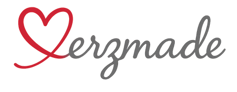

<header class="site-header"><div class="header-inner">
      <a class="brand" href="index.html" aria-label="Herzmade Startseite"></a>
      <button class="menu-toggle" type="button" aria-expanded="false" aria-controls="main-nav"><span>Menü</span><svg width="22" height="18" viewBox="0 0 22 18" aria-hidden="true"><path d="M1 2H21M1 9H21M1 16H21" fill="none" stroke="currentColor" stroke-width="1.5"/></svg></button>
      <nav id="main-nav" aria-label="Hauptnavigation">
        <a href="index.html">Startseite</a>
        <div class="nav-group"><div class="nav-group-title"><a href="geschenkideen.html">Geschenkideen</a><button type="button" class="submenu-toggle" aria-label="Anlässe anzeigen" aria-expanded="false">⌄</button></div><div class="nav-submenu"><a href="geschenkideen.html">Alle Geschenkideen</a><a href="geschenkideen.html#geburtstag">Geburtstag</a><a href="geschenkideen.html#paare">Hochzeit &amp; Liebe</a><a href="geschenkideen.html#freundschaft">Freundschaft &amp; Familie</a><a href="geschenkideen.html#danke">Danke &amp; Abschied</a><a href="geschenkideen.html#ehrung">Jubiläum &amp; Ehrung</a><a href="geschenkideen.html#geburt">Zur Geburt</a><a href="geschenkideen.html#firmen">Firmen &amp; Vereine</a><a href="geschenkideen.html#ostern">Ostern</a><a href="weihnachtsbaumkugeln.html">Weihnachten</a><a href="geschenkideen.html#gedenken">Erinnern &amp; Gedenken</a></div></div>
        <div class="nav-group"><div class="nav-group-title"><a href="index.html#materialien">Materialien</a><button type="button" class="submenu-toggle" aria-label="Materialien anzeigen" aria-expanded="false">⌄</button></div><div class="nav-submenu"><a href="holz.html">Holz</a><a href="glas.html">Glas</a><a href="schiefer.html">Schiefer</a><a href="edelstahl.html">Edelstahl</a><a href="keramik.html">Keramik</a><a href="leder.html">Leder</a><a href="papier.html">Papier</a></div></div>
        <a href="about.html">Über uns</a><a href="contact.html">Deine Idee anfragen <span aria-hidden="true"><svg class="ui-arrow" xmlns="http://www.w3.org/2000/svg" viewBox="0 0 24 24" width="18" height="18" fill="none" stroke="currentColor" stroke-width="1.5" stroke-linecap="round" stroke-linejoin="round" aria-hidden="true" focusable="false"><path d="M6 18 18 6M6 6h12v12"/></svg></span></a>
      </nav>
    </div></header>